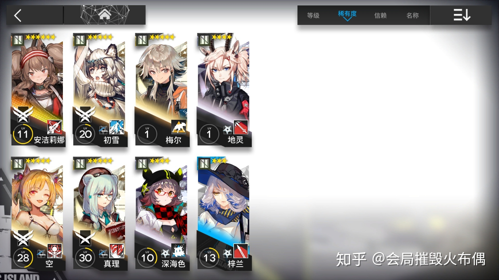

首页
重装干员
狙击干员
医疗干员
先锋干员
术士干员
辅助干员
近卫干员

辅助干员
1. 顾名思义，辅助干员的主要作用是辅助其他友方干员进行战斗。
2.辅助干员的攻击和防御能力通常都比较不出色，但部署费用较低，并且具备特殊的功能性。
3.减速型干员的普通攻击可以使敌人减速，从而起到牵制敌人的作用，属于此类型的干员有梓兰、地灵、真理以及安杰丽娜;
4.召唤型干员可以使用召唤物来协助作战，属于此类型的干员有深海色和梅尔；